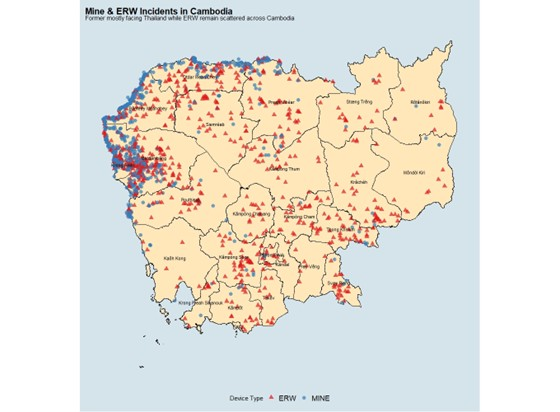
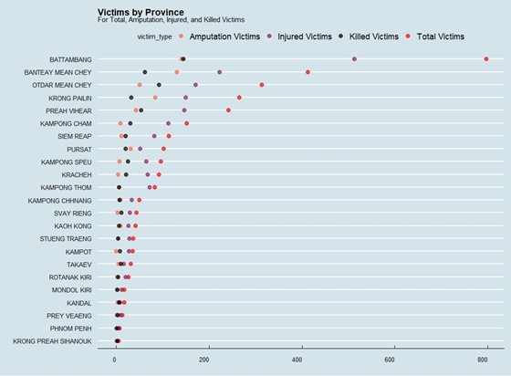
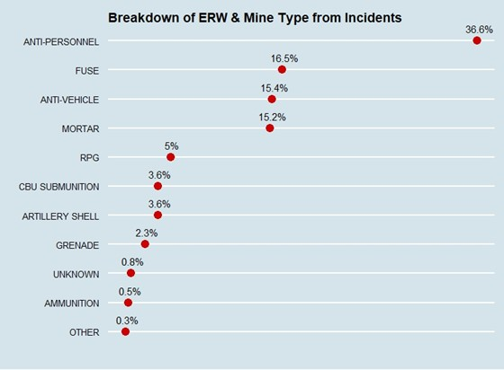

Cambodia • Landmines • ERW • Legacy
The Cambodian Civil War left behind more than painful memories. Millions of landmines and explosive remnants of war (ERW) continue to threaten communities today — a legacy of fear buried just beneath the surface.
The Cambodian Civil War was a major conflict between Khmer Rouge, Kingdom of Cambodia and subsequently the Khmer Republic after 1970. The aftermath resulted in establishment of Khmer Rouge, its brutal genocide on the people and major refugee crisis in South-East-Asia. Eventually, it led to the Khmer Rouge insurgency, lasting from late 1978 to 1998 which saw the overthrow of Khmer Rouge by Vietnam.
The painful legacy of these multiple wars is shouldered by the Cambodians, who continue to suffer and fall victim from unexploded landmines and Explosive-Remnants-of-War (ERW). Many continue to litter in Cambodia, close to communities, resulting in fear among people, especially in the countryside.
The Cambodian Civil war legacy of landmines and ERW continue to impact on Cambodian Communities to a large extent. This is based on 2 reasons: First, the legacy of the Khmer Rouge insurgency continue to impact Cambodian communities in provinces facing Thailand. Second, landmines and ERW scattered across Cambodia have greater impact on rural than urban areas where the majority of Cambodia's economic and daily activities take place.
The Cambodian Civil War (1967-1975) and its aftermath left deep scars on the nation. What followed was decades of insurgency, foreign intervention, and a landscape permanently altered by millions of unexploded ordnances.
The Cambodian Civil War was also a proxy war fought indirectly by the US and Soviet Union as the US was controlling the spread of communism and battling heavily in the Vietnam war. As a precursor to the civil war, Cambodia declared a state of neutrality but it was bombed by the US. The most intense was in a covert operation known as Operation Menu in 1970, part of an ultimatum to get Vietnam to negotiate peace terms.
However, it did not stop the spread of communism for it led to rise of Khmer Rouge under Pol Pot's leadership. Under his leadership, Cambodia under the name Khmer Rouge underwent turbulent times with major humanitarian crisis from lack of food, mass killings, and mass forced killings accumulating to the Cambodian Genocide. The genocide ended during the Khmer Rouge insurgency where Vietnam invaded and removed Pol Pot's government from power. While the civil war conflict ended in 1975, only following the death of its founder Pol Pot did the Khmer Rouge resistance movement end and peace arrived to Cambodia.
Data sources for this analysis are mine and fear datasets from the Open Development Cambodia (ODC). Mine data is collected from 2005 to 2013 while fear data is collected from 2009 to 2014.
Survey records were conducted by 4 organisations: The Halo Trust, Cambodian Mine Action Centre (CMAC), Mine Advisory Group (MAG), and Norwegian People Aid (NPA).
Mine incidents peaked at 503 in 2005 but have been making considerable decrease overtime. Numbers are in a decreasing trend with the most significant drop came in 2006 when incident numbers registered was 272 from 503 in 2005. The lowest incident recorded was in 2013 at 71.
Mine and ERW incidents registered the highest in 2005, peaking at 264 and 239 respectively. Their lowest numbers are in 2013 with incidents registered at 36 and 35 respectively.
One observation is mine incidents registered are lower than ERW across the time span from 2006 to 2009. In 2005, 2010 to 2013, ERW incidents registered are higher than mine incidents.
ERW are scattered across the country from urban sites like Phnom Penh, Cambodia's capital, to rural areas like Batdâmbâng. For mines, a significant number of them are located at Cambodia's border facing Thailand from the West and North direction.
This border with significant mine incidents starts from Kaôh Kong to Preah Vihéar. The map reveals a striking pattern: mine incidents cluster heavily in provinces facing Thailand, not Vietnam. This is the direct legacy of the K5 defense plan.
The points where ERW and mines are located can be divided into 3 clusters:
The biggest cluster covers Kaôh Kong, stretching to Preah Vihéar and Kâmpóng Thum in North and West Cambodia. This region was most heavily affected by the K5 defense line.
Covers Central and South Cambodia which includes provinces from Krong Preah Sihanouk to Phnom Penh to Tbong Khmum.
Covers East Cambodia which consists of 4 provinces: Stœng Trêng, Rôtânôkiri, Môndól Kiri, and Krâchéh. This region was heavily bombed during U.S. Operation Freedom Deal.
Unlike landmines, Explosive Remnants of War (ERW) are scattered across the entire country. This pattern reflects the extensive U.S. bombing campaigns of the 1970s. Operation Freedom Deal targeted eastern provinces, while Operation Menu focused on border areas. Decades later, unexploded bombs continue to surface in farmers' fields and children's playgrounds.
The eastern province of Kampong Cham shows particularly high ERW incidents — a direct result of the relentless bombing campaigns that targeted this region during Operation Freedom Deal from 1970 to 1973.
Behind every statistic is a human story — a farmer who lost a limb, a child who lost a parent, a community living in constant fear. The data captures only a fraction of the true impact.
Batdâmbâng, Otdar Mean Chey, and Bântéay Méanchey are the top 3 provinces with highest victims.
One observation for Bântéay Méanchey is despite having slightly lesser injured victims than Preah Vihéar, it has higher victims suffering from amputations and killed from mines and ERW. Thus, pushing it to the top 3 provinces with highest victims.
Fatalities occur most frequently when victims encounter anti-personnel mines or large ERW. Children and farmers are disproportionately represented in these statistics.
Many survivors face life-altering injuries. Cambodia has one of the highest per-capita rates of amputees in the world — a visible reminder of the war's lasting impact.
Most provinces suffer from mines and ERW but there are also some provinces like Kâmpôt and Prey Vêng that have purely ERW incidents.
There is a visible mine incident registered in Kâmpôt province but that incident did not have any victims affected. This could imply that a mine was possibly discovered early and avoided any claiming of victims.
The closer the provinces are to Thailand, the higher rate of mine incidents.
Anti-Personnel mines, fuses, and Anti-Vehicle mines are the top 3 explosives found from incident reports. Not trailing far behind is Mortar at 15.2%.
Fuses: A trigger used to arm an explosive device.
RPG: Rocket-propelled grenade, used to destroy armored vehicles.
CBU Sub munition: Cluster Bomb Unit or cluster bombs — particularly dangerous as they scatter over wide areas.
From the geographic analysis, it is observed that provinces bordering Thailand have higher incident and victim numbers, particularly with mines. In comparison, ERW are scattered in a more evenly-distributed way than mines.
"Why are there so many mine incidents facing Thailand and not Vietnam? Was Cambodia at war with Thailand?"
To address this question, it can be explained by Cambodia's history during the Khmer Rouge Insurgency, also known as the Cambodian-Vietnamese war. It started in 1978 after Khmer Rouge's military personnel opened fire at Vietnamese civilians near the border facing Vietnam, leaving more than 3,000 dead.
This followed an attempted invasion by Khmer Rouge forces into Vietnam, triggering a full-scale war retaliation by Vietnam, leading to toppling of Pol Pot's government. Khmer Rouge forces retreated to Thailand and used it as a platform to launch further attacks against Vietnamese forces who occupied Cambodia, turning it into a satellite state called People's Republic of Kampuchea (PRK).
To deter attacks from Khmer Rouge resistance forces, PRK began installing the K5 plan in 1984 along the Cambodian-Thailand Border. It is a long defense belt containing wire fences, trenches, and a mix of anti-personnel and tank mines with density reaching 3,000 mines per kilometer of frontage.
In reality, the K5 plan was deemed mostly a failure for a few main reasons:
South-East-Asia's tropical climate meant that forests cleared for the K5 plan would regrow rapidly, making it difficult to maintain.
Khmer Rouge forces continued their incursions despite such a massive defense line.
The lands used for K5 plan deprived land from Cambodian farmers who cultivate crops for a living.
The combination of reasons have a lasting negative legacy on Cambodians today in these provinces near Thailand.
Environmentally, the clearing of forests led to deforestation. For Cambodians who engage in primarily agricultural economic activities, it increases the risk exposure of potentially suffering permanent disability or death. Yet, absolute avoidance is impossible. For society to develop, it has to progressively start from engaging in agriculture before pivoting to manufacturing and eventually services. Agriculture is the bedrock of any economy to grow.
Socially, Cambodians, particularly children fall victim as their curiosity imposes a sense of fear and paranoia of being the next possible target of unexploded landmines and ERW.
In 2016, 2 children were killed by an exploded grenade they found when hunting for birds — a stark reminder that the war's legacy continues to claim innocent lives decades after the conflict ended.
It is universally agreed rural areas are more dangerous than urban areas for Cambodian communities with respect to location of mines and ERW. The question is to what extent is the difference in fear level among Cambodian communities in urban as compared to the countryside?
"Rural areas are more exposed to dangers from landmines and ERW as the majority of Cambodia's economic and daily activities are in agriculture."
The types of land are broadly aggregated into categories. Rural areas contain land used in Crop field, Rice Field, Orchard/Plantation, Foraging Area, Riverbank, Without Specific Human Use, and Pastureland. Urban areas refer to village or built-up area where there is significant human activity.
Rural areas constitute majority of the incident numbers, peaking to almost 300. This is followed by urban with incident numbers slightly above 100. Throughout the timeframe from 2005 to 2013, rural incidents consistently top the incident numbers, showing evidence that rural areas are more dangerous than urban areas.
Farmers clearing land, children herding livestock, families collecting firewood — daily activities in the countryside carry inherent risk. Most incidents occur in agricultural settings where ordnances lie hidden just beneath the soil.
Foraging area and rice field are leading categories in rural incidents due to Cambodia's agricultural economy and historical practices from the Khmer Rouge era.
When examined closer, urban areas top the incident numbers due to higher human activity density. Given that urban areas have the highest human activity, there is greater likelihood of an individual encountering a possible landmine and ERW explosive. Cambodia was relentlessly bombed by the US.
Rice is the main staple food Cambodians grow to eat. It accounts for up to eighty percent of the total caloric intake and up to seventy percent of the protein intake of the average Cambodian.
Pol Pot was heavily influenced by Ultra-Maoism and absolute egalitarianism, which called for absolute social equality. His promotion of farm collectivization, confiscating contraband, and issuing rationing forced Cambodians to adopt foraging — which was actually illegal under Pol Pot's rule.
This practice continues today and has become part of Cambodian food cuisine, exposing foragers to unexploded ordnances.
For rice fields, it is possible that as farmers return to their lands and engage in rice agriculture, they might have unintentionally encountered an unexploded mine or ERW, resulting in an incident. This is especially true for areas near the K5 plan defense zones.
Survey data from 2009-2014 reveals how fear levels among Cambodian communities vary significantly by province and have changed over time. The charts measure counts of fear level subdivided by province and year.
Overall, there has been a decreasing trend in fear levels surveyed from Cambodians — a testament to local and international community efforts in their work to demine former war-torn areas and make Cambodian communities safer.
Phnom Penh fear level counts were very minimal. The highest was for medium fear level reaching 42 counts in 2012. For high and low fear level, it is mostly registered at 2.
Rural areas bordering Thailand saw much higher figures: 227 records of high fear level in Batdâmbâng and 93 in Otdar Mean Chey. Medium fear level was recorded for Batdâmbâng at its highest at 174 in 2011 while in Otdar Mean Chey it registered at 377.
What is interesting is some provinces register surprisingly high levels of medium and above fear, even when not located near Thailand and the K5 plan minefield belt.
In Kratie, fear levels were 126 and 206 for high and medium in 2005. In 2006, high levels registered was 19 but medium levels increased to 215.
Kratie is not located near provinces facing Thailand and the K5 plan minefield belt. Rather, it is located in East Cambodia facing Vietnam.
Kampong Cham is located close to Phnom Penh at the center of Cambodia but has fear levels registered higher than normal.
A possible explanation could be the close proximity to Vietnam which during the Vietnam war, was relentlessly bombed during Operation Freedom Deal, a controversial air raid campaign by US 7th Airforce to bomb East Cambodia from 1970 to 1973.
These results show the extent of how dangerous Cambodian communities live in rural areas as compared to urban areas. Coupled with Cambodia's main economic activities stemming from agriculture, these activities increase risk exposure to Cambodians in encountering mines and ERW from the civil war. The legacy of US air raid campaigns plays an influential role in raising fear levels in provinces not close to the K5 plan.
Naturally, fear levels should rise if the proximity of unexploded explosives is nearer to an individual or community. But is it the case universally? Can it differ by province?
The relationship between proximity and fear is not absolute. While communities living "very near" to known ordnances report higher fear, many provinces maintain medium fear levels even when proximity is far. Fear is shaped by historical memory, not just current proximity.
Results show that fear levels are majority at medium level. Interestingly, medium levels continue to remain the highest even when proximity to mines and ERW were far, especially for Kampong Thom and Pursat.
Banteay Meanchey registers the largest counts of high and medium level fear for very near and near proximity to unexploded ordnance. This is likely due to its location facing Thailand and being part of the K5 plan where it is heavily mined.
On the flip side, Otdar Mean Chey is also part of the K5 plan and facing Thailand but has lesser counts than Banteay Meanchey. This is due to inconsistent numbers being surveyed which produce such discrepancies.
Battambang has higher counts of high fear level for very near, near, and far proximity to landmines and ERW due to its location near the K5 plan, which understandably produces higher fear and paranoia to Cambodian communities there.
Krong Pailin province strangely has lower fear levels across all proximities to landmines and ERW despite locating beside Battambang facing Thailand. A likely explanation is inconsistent numbers surveyed every year, cumulating to lesser numbers than Battambang even though they are beside each other.
Kampong Cham shows high fear levels when proximity is very near and near to unexploded explosives. High fear level counts are higher than medium level fear — a possible explanation could be the relentless US air bombing campaign in the 1970s during Operation Freedom Deal which bombed East Cambodia.
Phnom Penh meanwhile only has 3 incidents of encountering unexploded ordnance but still registers medium fear level as it is Cambodia's capital where human activity and population density is very high.
Interesting part is Preah Vihear because it registers higher counts of medium fear level even though proximity is far, reaching close to 300. When it comes to very near and near proximity, the numbers dropped to below 100. It is strange because it is located beside Thailand and part of the K5 defense plan.
Kampong Speu and Kratie register close to 50 and 100 counts of high fear level for very near proximity to unexploded ordnance respectively. Svay Rieng registers slightly more than 100 for high fear level for near proximity. This is likely due to the aftermath legacy of US air raids where bombs continue to lurk today undiscovered.
"Proximity to landmines and ERW affects fear level, however, it differs by province. North, East, and West Cambodia provinces have higher fear levels because of their history with Khmer Rouge resistance and US air raid campaigns."
The impact on Cambodian communities is likely to continue affecting their daily lives and they will have to live with it unless international and local efforts clear all explosives. The people will live with it but complacency might develop overtime which can trigger incidents that either produce permanent injuries or worst case, death.
The Cambodian Civil War's legacy of landmines and ERW continues to impact communities to a large extent. This analysis addresses three key questions that underscore the ongoing humanitarian challenge.
Why are there so many mine incidents facing Thailand and not Vietnam? Due to Vietnamese occupation and the K5 defense plan. ERW scattered across the country is attributed to US air raids and Vietnamese invasion.
What extent is the difference in fear level in urban vs countryside? Cambodian communities in rural areas are more exposed to dangers as their main economic activities are in agriculture.
Does proximity affect fear level? Yes, but it differs by province. There are also inconsistent numbers surveyed which make assessment inconsistent — a follow-up is recommended.
"Until international and local efforts continue or step up their work to clear the bleak legacy of the Cambodian Civil War, more Cambodians will continue to fall victim to landmines and ERW."
Education and supervision is key — particularly for children, who are the most vulnerable group. Preventing complacency among communities as they live with landmines and ERW requires sustained awareness and international support.